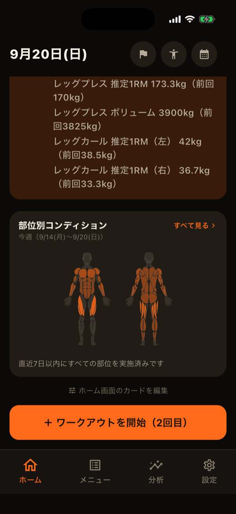

「胸は週に何セットやればいいのか」は、筋トレを続けていると多くの人がぶつかる疑問です。トレーニングの量を測る方法はいくつかありますが、部位ごとに「週に何セットやったか」を数えるのは、シンプルで比べやすい方法の1つです。
なぜ「週あたり・部位ごと」で数えるのか
1回のワークアウトだけを見ると、胸の日は胸のセット数が多く、脚の日は脚が多くなるのは当然です。ある部位にどれだけ刺激を与えているかは、1週間の合計で見た方が実態をつかめます。また、重量×回数で計算するボリュームは種目によって桁が大きく変わるため、違う種目同士を足し合わせるのには向きません。セット数なら、種目をまたいで部位ごとにまとめられます。
よく言われる目安
筋肥大を目的とした研究や指導の現場では、1つの部位につき週10〜20セット程度がよく目安として挙げられます。ただし、これはあくまで出発点です。
- 始めたばかりの人は、週5〜10セット程度でも十分に伸びることが多い
- トレーニング歴が長い人ほど、同じ量では伸びにくくなる傾向がある
- 睡眠・食事・仕事の疲れなど、回復できる量は人と時期によって変わる
量を増やせば増やすほど伸びるわけではなく、回復が追いつかなければ逆効果にもなります。目安の数字に合わせることより、自分の記録を見ながら調整することの方が大切です。
数えるときの注意点
- ウォームアップは数えない：軽い重量のセットまで含めると、実際より多くやったように見えてしまいます
- 限界に近いセットを数える：余力がたっぷり残る軽いセットは、同じ1セットでも刺激が大きく異なります。RPEで7以上を目安にすると数えやすくなります
- 複数の部位を使う種目：ベンチプレスは胸だけでなく三頭筋や肩も使います。補助的に使う部位をどう数えるかで合計が変わるので、毎回同じルールで数えることが大切です
- 1回に詰め込みすぎない：同じ週15セットでも、1日でまとめてやるより2回以上に分けた方が、質の高いセットを保ちやすくなります
自分に合った量の見つけ方
まずは今の自分の週のセット数を記録から把握し、その量で数週間続けて、重量や回数が伸びているかを確かめます。伸びていれば今の量を維持し、停滞していて回復に余裕がありそうなら、1つの部位あたり週2〜3セットずつ増やしてみましょう。逆に、疲れが抜けず記録が落ちてきたら、量を減らすサインです。
部位ごとのセット数を並べて見ると、量の偏りにも気付けます。胸や腕ばかりで背中や脚が少ない、といった偏りは、自分では意外と気付きにくいものです。
LiFTYのホームの「部位別コンディション」では、その週の部位ごとのセット数と、最後に鍛えてからの経過日数を体の図で確認できます。分析タブの部位分析では、部位ごとのセット数の推移や、どの種目で稼いでいるかを期間を選んで振り返れます。ウォームアップに指定したセットはどちらの集計にも含まれません（ホームと記録カレンダー・分析タブの使い方）。

関連記事
LiFTYでは、部位ごとの週のセット数がホームに自動で集計され、ウォームアップを除いた本番のセットだけで量の偏りを確かめられます。アカウント作成なしで、今すぐ試せます。
App Storeでダウンロード